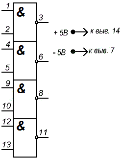

Микросхема К155ЛА3
Микросхема К155ЛА3: логическая, ТТЛ, содержит 4 элемента 2И-НЕ.
В функциональной структуре микросхемы К155ЛА3 имеется 4 самостоятельных логических элементов 2И-НЕ. Одно лишь их объединяет, а это линии питания (общий вывод - 7, вывод 14 – положительный полюс питания) Как правило, контакты питания микросхем не изображаются на принципиальных схемах.

Рис. 1 - Обозначение на схеме микросхемы К155ЛА3
Каждый отдельный 2И-НЕ элемент микросхемы К155ЛА3 на схеме обозначают DD1.1, DD1.2, DD1.3, DD1.4. По правую сторону элементов находятся выходы, по левую сторону входы. Аналогом отечественной микросхемы К155ЛА3 является зарубежная микросхема SN7400, а все серия К155 аналогична зарубежной SN74.
Корпус К155ЛА3 типа 201.14-1, масса не более 1 г и у КМ155ЛА3 типа 201.14-8, масса не более 2,2 г.
Таблица 1
| Номинальное напряжение питания | 5 В±5 % |
| Выходное напряжение низкого уровня | не более 0,4 В |
| Выходное напряжение высокого уровня | не менее 2,4 В |
| Напряжение на антизвонном диоде | не менее -1,5 В |
| Входной ток низкого уровня | не более -1,6 мА |
| Входной ток высокого уровня | не более 0,04 мА |
| Входной пробивной ток | не более 1 мА |
| Ток короткого замыкания | -18...-55 мА |
| Ток потребления при низком уровне выходного напряжения | не более 22 мА |
| Ток потребления при высоком уровне выходного напряжения | не более 8 мА |
| Потребляемая статическая мощность на один логический элемент | не более 19,7 мВт |
| Время задержки распространения при включении | не более 15 нс |
| Время задержки распространения при выключении | не более 22 нс |
Зарубежные аналоги
SN7400N, SN7400J
Источники
joyta.ru - Описание микросхемы К155ЛА3
Никулин С.А. Энциклопедия начинающего радиолюбителя